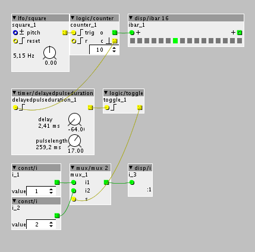

Hello,
I'm trying to use a counter as a trigger for a switch but i can't get it to work.
Any tips?
Kind regards,
Andreas

Hello,
I'm trying to use a counter as a trigger for a switch but i can't get it to work.
Any tips?
Kind regards,
Andreas
Hi!
The "mux 2" object does not expect a trigger to change it's output but rather something like a gate. It will output i1 as long as s = 0 and i2 while s = 1. So you'll probably acheive what you were going for by connecting the LFO output directly to the "mux 2" object.
If you ever have to convert a gate to a trigger, you can use "tiar/logic/rising" and if you need to lenghen a trigger signal to become a gate there's "timer/delayedpulseduration".
Have fun with the Axoloti and don't hesitate to ask more questions. Cheers!
Thank you for replying.
Connecting the LFO to the MUX is not what I'm looking for. This way it just keeps switching between the 2 entries.
I'm looking for a way to use the counter as a boolean to decide which entry is engaged.
I could for example switch between 2 oscillators after my counter gives its trigger.
Is there an object that switches from 0 to 1 after a trigger and vice versa?
Thanks,
Andreas
If you want to use the carry pulse from the counter, you should lengthen it, as @borututuforte suggested.
Also, if you want this signal to toggle i1 and i2, you should use a logic/toggle object before the mux.
Something like this? In thus small example, everytime the counter hits 10, it triggers a short pulse, that is lengthened by the timer/delayedpulseduration. This delayed pulse triggers a toggle that outputs consecutively either 0 or 1.
These values are sent to the mux that then switch between each input.

Ah yes, the logice/toggle object is what I needed, I don't really need the pulsedelay it seems to me.
Thank you both for replying.
Ah yes indeed, it seems that the toggle object is happy with the short pulse from the counter.
happy to help